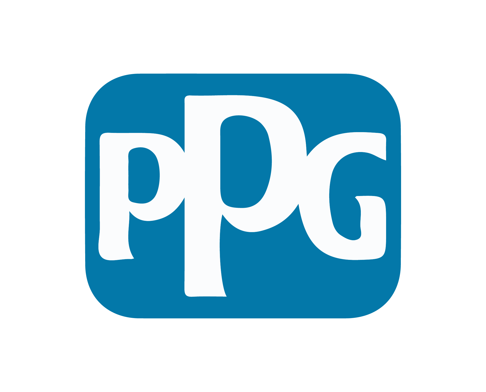

SERVICES & PROCESS
騰煇連工帶料整合服務項目
01. GRC 特殊造型工程 (從設計圖到實體落地)
依據立面造型與幾何需求，靈活整合高精度木作工藝模具與 3D 數位開模技術。提供從 3D 電腦放樣、預鑄開模、工廠養護到現場吊掛組裝的一條龍服務。適合歐式古典花紋、高難度非標幾何曲面與公共藝術裝置。
GRC 建築風格與專業應用範疇
STYLE 01
歐式古典建築風格
精雕飾柱、巴洛克造型簷線、古典穹頂與複雜幾何切割，呈現厚實典雅的建築質感。
STYLE 02
自然曲面與仿生立面
有機流動立面曲面、大跨距拱門與連續波浪造型，為現代建築賦予有機的視覺張力。
STYLE 03
3D 參數化幾何造型
配合當代 3D 電腦放樣與多軸加工，完美實現非標幾何切面與前衛立面外飾需求。
GRC 預鑄工藝特點與永續優勢
結構輕量減載
高強度輕量化，大幅降低建築主體自重負載，減少混凝土與鋼筋用量。
永續減廢低碳
替代傳統外推造型工法，大幅減少施工過程木模板與保麗龍廢棄物。
耐候防火防潮
玻璃纖維有效提升抗張強度，純水泥基材具備一級防火與極佳耐候性。
GRC製程實錄
FACTORY RECORDINGGRC Web3D 構件互動拆解器
拖曳可 3D 旋轉與縮放模型，切換不同模式檢視結構細節。
台中雅園新潮
觀看雅園新潮 IG 短片 →02. 建築外牆高耐候塗料系統 (PPG)
全系列產品皆具備「透氣不透水」長效防護特性，避免外在水氣造成漆膜起泡與壁癌。
【騰煇服務說明：專案整合施作（連工帶料）】
騰煇為 PPG 原廠授權外牆工程團隊，專注於「現場基底檢測 ➔ 選材建議 ➔ 專業連工帶料噴塗」整體專案服務，不單純零售塗料桶。因為外牆塗料的長效耐久，取決於現場基底處置與標準化施工品質。

龐亞漆（Panya Coating）
- 高超附著力： 達 1.4MPa (普通水性漆僅 1.0MPa)。
- 奈米級分子： 乳液分子達 10 納米，耐污防塵性能極佳。
- 抗潮透氣： 漆膜乾燥後甚至可浸泡於水中，抗風化性強。
- 清水模美學： 仿清水模效果優異，顏色亦可依專案客製。
03. 外牆拉皮整合翻新工程
針對老舊透天與大樓磁磚剝落、壁癌滲水等安全隱憂，提供從結構安全診斷、打底修補、防滲處理到 GRC 造型線條與 PPG 彈性塗料專案施作。
外牆拉皮前後對比展示 (請左右拖曳中央滑桿)


04. 外牆細部配件系統 (滴水條 / 導水板)
外牆長效乾淨的關鍵細節！搭配專利鋁合金與不鏽鋼滴水條、導水板，有效導引雨水避免牆面產生髒污黑水痕。